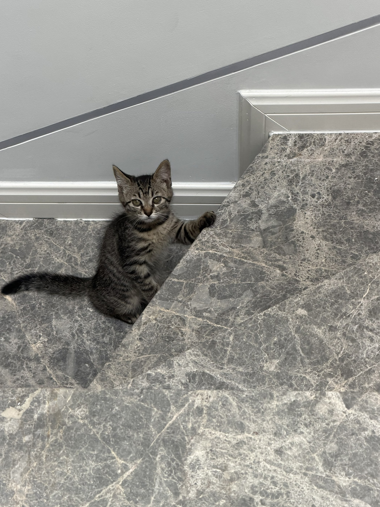
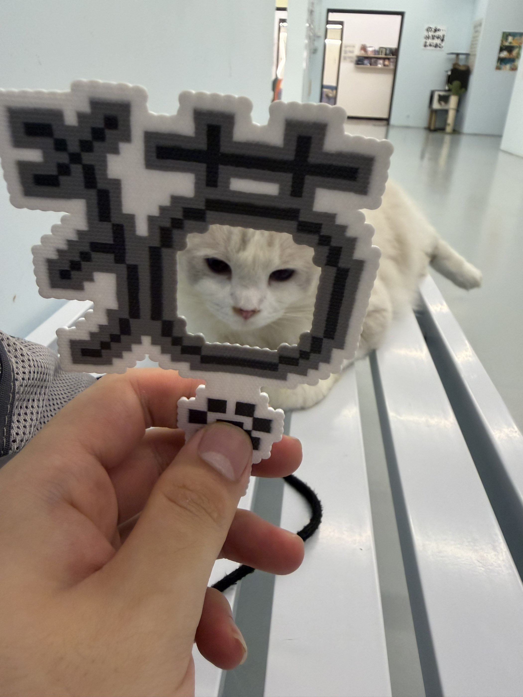
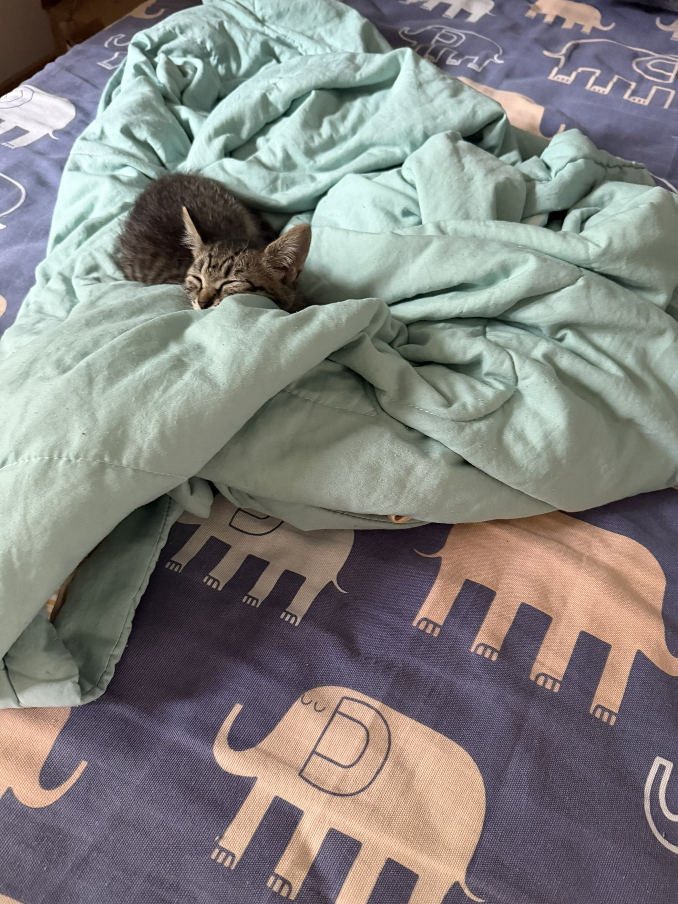
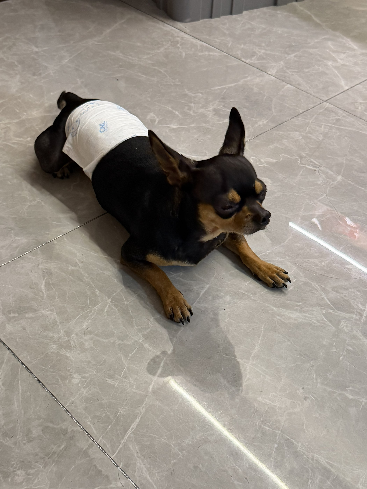
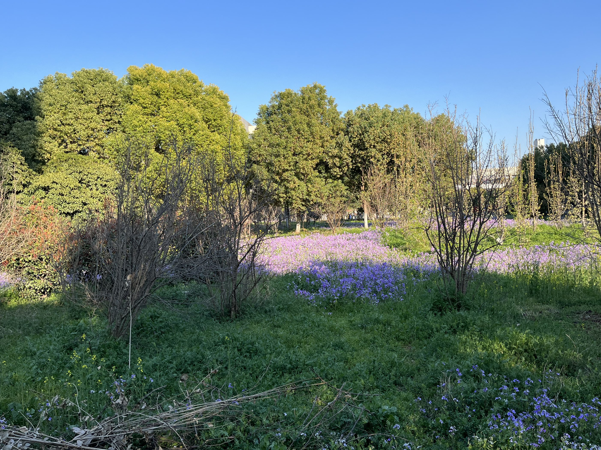

CURRENT FOCUS
AI 应用
与创造力
探索人工智能如何帮助人更高效地表达、学习和创造，把新技术做成真正能用的产品。
AVAILABLE FOR NEW IDEAS
崇施涵，天津大学计算机科学与技术专业在读。
正在高数、英语和 AI 应用三线推进，也热爱音乐、羽毛球与二次元。
主攻 AI 应用
01 / ABOUT ME
我相信学习最好的方式就是持续创造。从第一行代码到完整的个人网站，我正在一点点建立自己的数字世界。
和数字分身聊聊 ↗CURRENT FOCUS
探索人工智能如何帮助人更高效地表达、学习和创造，把新技术做成真正能用的产品。
BUILDING
不断迭代设计、交互与内容，让主页成为持续生长的数字名片。
LEARNING
HTML / CSS、JavaScript、Python、Supabase，以及面向未来的表达能力。
02 / WORKS
四件都是真做出来的，两件能直接点开试。
源码在 GitHub，随时可以翻。
纯静态单页，没上任何框架：本地托管字体、原创背景音乐、花瓣式相册与灯箱、响应式布局全部手写。发布走自己写的 Python 脚本，一条命令推到 GitHub Pages。
页面下方那个问答机器人：52 条本地知识库、关键词打分匹配，带打字动画、追问推荐和输入联想。纯前端实现，不联网、不调用模型、零成本运行。
页面底部的留言表单，数据存在 Supabase。权限交给数据库的 RLS 策略兜底，前端只放设计上允许公开的匿名密钥——所以源码完全公开，别人也读不走留言。
右下角循环的那首曲子是自己写的：钢琴加小提琴，A 小调 60 BPM，两分多钟。写代码卡住的时候就循环它。
03 / JOURNEY
学校课程之外，基本靠想做点什么时现学。
每一版都留在本地，看得见进步。
起点
从 HTML 和 CSS 起手：标签、盒模型、Flex、Grid，一点点折腾出第一版能看的个人主页。现在回头看很粗糙，但那是起点。
V2
补上响应式断点、滚动进场动画、花瓣式相册与灯箱，同时把字体换成本地托管，不再依赖外部 CDN。
V3
用 Supabase 做了带 RLS 权限的反馈系统，又加上纯前端的数字分身——现在它应付得了五十多个问题，答不上来还会推荐你换个问法。
现在 · V4
一边补基础，一边把主页继续做深：这版顺手补齐了分享卡片、站点图标和 SEO 这些「上线之后才想起来」的细节。
04 / CAPABILITIES
05 / NOW
时间基本分给这三条线，
主页是它们共同的练习场。
必修的地基。先把微积分和线性代数的底子打扎实，后面学更硬的东西时才不会塌。
为了少等别人翻译。目标是能直接读英文文档和资料——这是学 AI 最省时间的一笔投资。
想一直做下去的方向。继续啃 Python 和 AI 应用开发，下一步想做出一个真正有人用的小工具。
这三条线也写进了数字分身——问它「你最近在做什么」，答案和这里一致。
06 / MOMENTS
九张照片围成一朵花。
点击任意一张可放大查看。






07 / DIGITAL TWIN
数字分身是我的一本本地小抄：学习、AI、作品、兴趣、联系方式、这站怎么做出来的，都能问。
纯前端本地知识库 · 不联网 · 不收集任何信息
08 / FEEDBACK